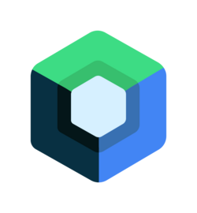

Final on-screen frame

On the left is the frame as the user sees it. It pulls apart into an exploded stack of GPU passes,
logged step-by-step in the render history. ImlaHost draws the whole UI once per frame into a
HardwareBuffer and samples it directly as one shared GPU texture, with no copy back to the CPU.
Every Modifier.effectLayer {…} then samples its footprint from that backdrop, blurs and
masks it to shape, draws its own content on top, and the renderer composites the layers in z-order. Where the
platform allows (API 29+), the finished frame is presented over a direct SurfaceControl path,
handing HardwareBuffers straight to the compositor so pixels stay on the GPU end to end. On older
devices it instead renders with OpenGL into an external texture and copies that to the screen.
What the user sees
Final on-screen frame
Exploded stack
Render history